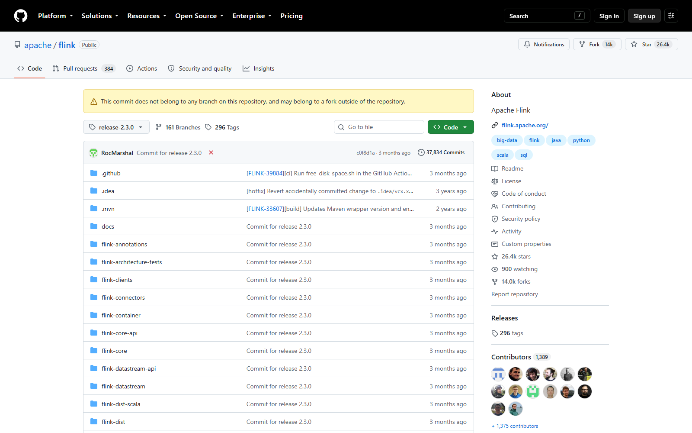
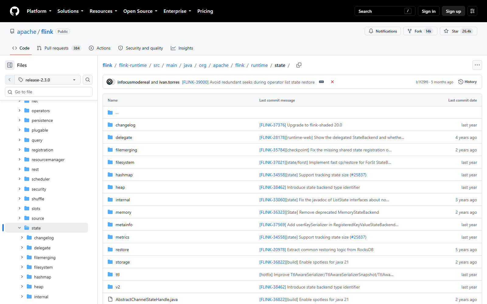
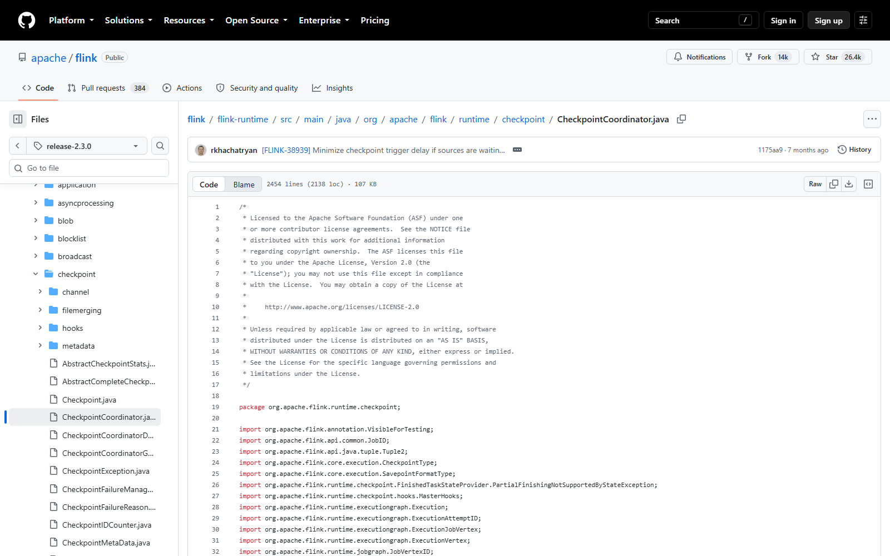

OSS PROJECT INTRO · APACHE FLINK 系列第 5 期：架构与源码导读（收官）
收官期，回答"想读 Flink 源码，从哪进"。路线很简单：先拿地图，再走干道，最后跟一次完整的 Checkpoint——从 JobManager 里的 CheckpointCoordinator 发起，到 barrier 随数据流流过每个算子，再到状态落盘、回执完成。本系列全程锚定 git tag release-2.3.0，所有截图与行号都可复现。最后给 Java 工程师一条四周读码路线和一套防迷路纪律——读完这期，你在 IDE 里不再需要向导。
第一样，锚定 tag。Flink 主分支每天都在变，读码必须钉死一个版本：本系列全程用 release-2.3.0（对应官网 2.3.0 正式版，GitHub tag 命名规律是 release-主版本）。第二样，能编译的环境。JDK 17 + Maven 导入根 pom，第一次全量构建较久，可先 -pl flink-runtime -am 只建目标模块及其依赖。第三样，一份官方文档开在旁边。2.3 文档站的 Concepts、Internals 与 Operations 三章就是源码的"人话注释"——本期每一段读码路线，都对应文档的一个章节，先读文档建立预期，再进源码验证细节，是读大项目最快的姿势。
读码目标也先说清：本期不求读完，只求读穿一条主干线——Checkpoint 的执行路径。它是 flink-runtime 里最核心、也最能串起调度、状态、网络三层的一条线，走完它，其他路你会自己走。

根目录几十个模块，按层读就不晕：API 层——flink-core-api 与 flink-core（类型系统、函数接口、状态声明）、flink-datastream-api 与 flink-datastream（新一代 DataStream API V2）；实现层——flink-streaming-java（经典 DataStream API 的实现入口）、flink-clients（作业提交与编译）、flink-connectors（连接器）；运行时层——flink-runtime，JobManager 与 TaskManager 的全部执行逻辑都在这里，是名副其实的主战场；外围层——flink-dist（发行打包）、flink-examples（官方示例，第 2 期跑过的 WordCount 就住这里）。分层读法一句话：从你每天用的 API 进入，顺着一个调用栈往 runtime 走。
展开 flink-runtime/src/main/java/org/apache/flink/runtime，包名几乎是自解释的功能分区：checkpoint 与 state——快照协调与状态后端，本期主线；executiongraph——三层图的第三层，调度与恢复的依据；scheduler 与 slots——作业调度与槽位管理；resourcemanager——第 3 期讲的资源管理者本人；shuffle 与 net——数据交换与网络栈；rest 与 webmonitor——Web UI 背后的接口。读 runtime 不必按目录顺序，按你关心的功能点直达对应包——这份"包名即地图"的直觉，比任何导读文章都持久。
| 你想搞懂什么 | 直接进哪个包 | 对应官方文档 |
|---|---|---|
| 快照怎么发起与完成 | runtime.checkpoint | Fault Tolerance 系列 |
| 状态存哪、怎么读写 | runtime.state（hashmap / heap / filesystem） | State Backends |
| 作业怎么被调度 | runtime.scheduler + executiongraph | Internals / Job Scheduling |
| Slot 怎么分配 | runtime.slots + resourcemanager | Concepts / Flink Architecture |
| 数据怎么在算子间流动 | runtime.shuffle + runtime.io.network | Internals / Data Exchange 类文章 |

第 3 期讲过"哈希表换速度、RocksDB 换规模"，现在看它在新码里的结构基础：包根放接口，子包放实现。接口层是三个词：StateBackend（工作状态放哪、怎么创建各类状态）、CheckpointStorage（快照写哪：文件系统还是 JobManager 堆）、以及各类 State 与 StateDescriptor（第 3 期代码里的 ValueState 三兄弟就是这层的门面）。实现层各占一个子包：hashmap、heap、filesystem，RocksDB 在独立模块 flink-state-backends 里。业务代码永远只碰接口，换后端 = 换一行配置，这就是"面向接口"在基础设施里的样子——你自己设计 SDK 时，这层包结构值得照抄。
来源注记——github.com/apache/flink @ release-2.3.0（2026-09-30 核对与截图）：runtime/state 包根含 CheckpointStorage.java、KeyedStateBackend.java 等接口与抽象类，hashmap/heap/filesystem/storage 等子包各为实现；RocksDB 后端位于 flink-state-backs 模块。

源码主线五站，每一站都有明确的"地标"：第一站，发起——CheckpointCoordinator（坐标：runtime/checkpoint，官方文档明说它是 JobManager 的一部分）按周期触发第 n 次快照；第二站，源头插屏障——官方原话：所有 source 先记录消费位点、往流里插入编号的 checkpoint barrier；第三站，barrier 流动——barrier 随作业图流过每个算子，官方文档原话："As each operator receives one of these barriers, it records its state"，多输入算子先做对齐；第四站，异步落盘——状态经 StateBackend 写入 CheckpointStorage 指向的目录，copy-on-write 让计算不被快照堵住；第五站，回执完成——所有算子 ack 收齐，快照完成，可从恢复点拉起。读的时候带着三个问题走：barrier 是谁生成的、怎么跟着数据走的？对齐在哪个方法里等齐两路输入？ack 丢了一路怎么办（答案是超时按失败处理）？——问题驱动，比逐行扫描快十倍。
来源注记——nightlies.apache.org 2.3 文档 Fault Tolerance via State Snapshots 与 github.com/apache/flink @ release-2.3.0（2026-09-30 核对）：发起方为 checkpoint coordinator（JobManager 的一部分）、source 记位点插 barrier、算子收到 barrier 记状态、asynchronous barrier snapshotting 为 Chandy-Lamport 变体均为官方原文。
读 checkpoint 包时你会不断撞见 savepoint（保存点），两者共用同一套状态快照的底座，定位完全不同：
| 维度 | Checkpoint（检查点） | Savepoint（保存点） |
|---|---|---|
| 谁触发 | 引擎按周期自动 | 用户手动命令触发 |
| 快照形态 | 可增量（RocksDB 独家） | 总是完整快照 |
| 保留策略 | 通常只留最近几个，随作业取消清理 | 长期保留，面向升级迁移 |
| 典型用途 | 故障自动恢复 | 改代码升级、扩缩容、双跑切换 |
一句话分工：checkpoint 是安全气囊，savepoint 是搬运托盘。源码里两者最终都走"状态快照 + 元数据落盘"那条路，读懂 checkpoint，savepoint 自动就懂了。
两条纪律贯穿四周：永远在 tag 上读（release-2.3.0 的行号与本期截图可互相对照）；每个概念先用官方文档建立预期，再进源码验证——文档是人话版的设计说明，源码是细节版的真相。
每题点击选项立即反馈 · 共 3 题
1. Checkpoint 的发起方是谁？
2. barrier 机制中，"记录消费位点"发生在哪一步？
3. 关于 savepoint，符合源码与文档口径的是？
先回顾原算法。Chandy-Lamport（1985）解决的是"没有全局时钟的分布式系统怎么拍一张全局一致的快照"：任意节点先给自己打标记并记录自身状态，然后沿每条信道发出一个标记消息（marker）；节点收到第一条 marker 时也记录自身状态，并把 marker 继续转发，随后把"收到首 marker 之前、之后"的信道消息分别记账。全部节点记完，快照即一致——它的精髓是用消息本身携带进度语义，不要求停机、不依赖时钟对齐。Flink 的流式版本把这套思想改造了三处。第一，marker 有了方向与载体：原算法的 marker 走控制信道，Flink 的 barrier 直接嵌在数据流里随数据走——因为流系统的"进度"本来就定义在数据上，barrier 天然就是"此前的数据都到齐了"的声明，还顺带承担了第 3 期讲的触发窗口的职责，一份机制两用。第二，"记状态"变成"写状态后端"：原算法假设状态就是内存里的变量，Flink 的状态可能几十 GB，所以快照是异步的——copy-on-write 让计算继续改"新版"，后端慢慢持久化"旧版"，这是原论文没有的工程层。第三，对齐换来了精确语义：原算法允许多个 marker 混行，Flink 在 exactly-once 模式下要求多输入算子把 barrier 对齐，让快照边界严格落在"所有输入恰好消费到 barrier n"——这正是第 3 期思考题里那个"快分区等慢分区"的代价来源。读算法原文再看源码，你会发现教科书与工程之间隔着一层"约束翻译"：无界流、海量状态、精确语义，每一条约束都在原算法上对应一处改造。这种"读论文—对照源码—找出改造点"的读法，是读所有分布式系统源码的通用钥匙，不止 Flink 一家。
先算产出，不谈情怀。直接的产出有三笔。第一笔，排障能力升维：实时作业的故障大多发生在框架层——反压传导、checkpoint 超时、状态恢复异常，会读源码的人从"看日志猜"变成"按调用栈定位"，第 4 期反压三步只是入口，源码是终局武器。第二笔，调优有依据：并行度、缓冲、状态后端、心跳超时这些参数，读不懂源码只能抄别人的值，读懂了就能按自己的数据形状推导——第 3 期那个"slot 数等于最高并行度"的结论，源码里能看到它为什么成立。第三笔，迁移成本下降：2.x 清账期（Scala API 移除、DataSet 退场）意味着存量升级会持续发生，读得懂的人做升级评估、做 savepoint 迁移方案，是团队里的稀缺角色。再算投入与风险：flink-runtime 两千多行的核心类、遍布回调与异步，完整读通远不止一个月——风险是"读了三周还没用到生产，被业务催走"。所以最小可行方案是"用问题切割，不追求读通"：第一周只跟第 05 节的 checkpoint 五站，产出一份"我们的作业快照要多久、卡在哪"的分析报告，直接回哺生产调参；第二周只读 scheduler 到 slot 分配一段，产出"我们该买多少 TaskManager"的容量推导；第三、四周按当季度的实际故障类型选包深读。判断标准也送给团队：当你们发现"每次出问题都在搜同样关键词"时，读码的复利就开始超过投入了——读码不是 KPI，是排障边际成本递减的投资。一个月不长，但足够把"黑盒"变成"灰盒"，而灰盒，已经是团队里前百分之十的水平。
Apache Flink 五期，带走这六句话：
start-cluster.sh 起集群、flink run 交作业、enableCheckpointing(n) 开容错；本系列到此收官——从"流处理为什么难"到"跟着一次快照读穿运行时"，五期的全部产物都锚定同一个版本基准与官方文档口径，欢迎回到课程目录挑下一个项目继续。Primary source：Apache Flink 官方文档 2.3——本期读码路线、快照机制与 checkpoint/savepoint 口径均出自官方文档 Internals、Fault Tolerance 章节（v2.3.0 / tag release-2.3.0，2026-09-30 核对）；模块与行号截图出自 GitHub apache/flink 仓库。